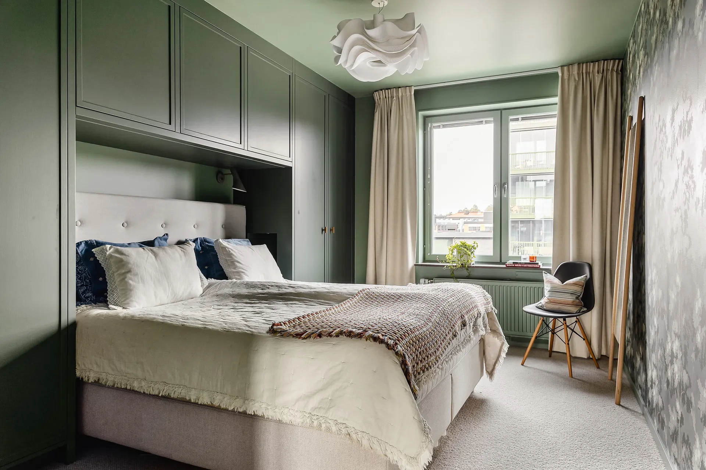
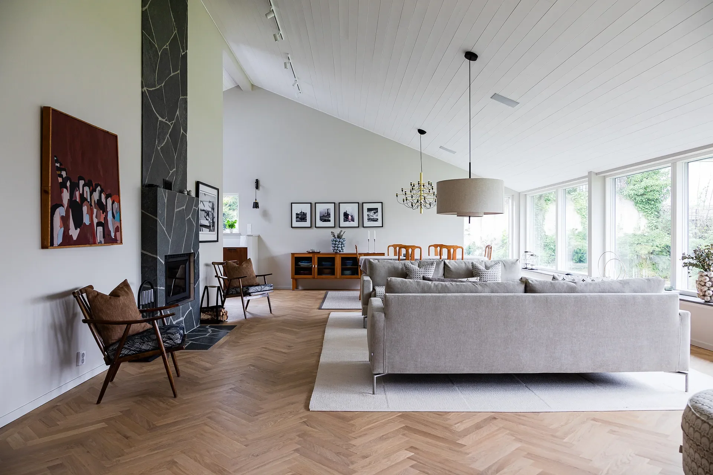
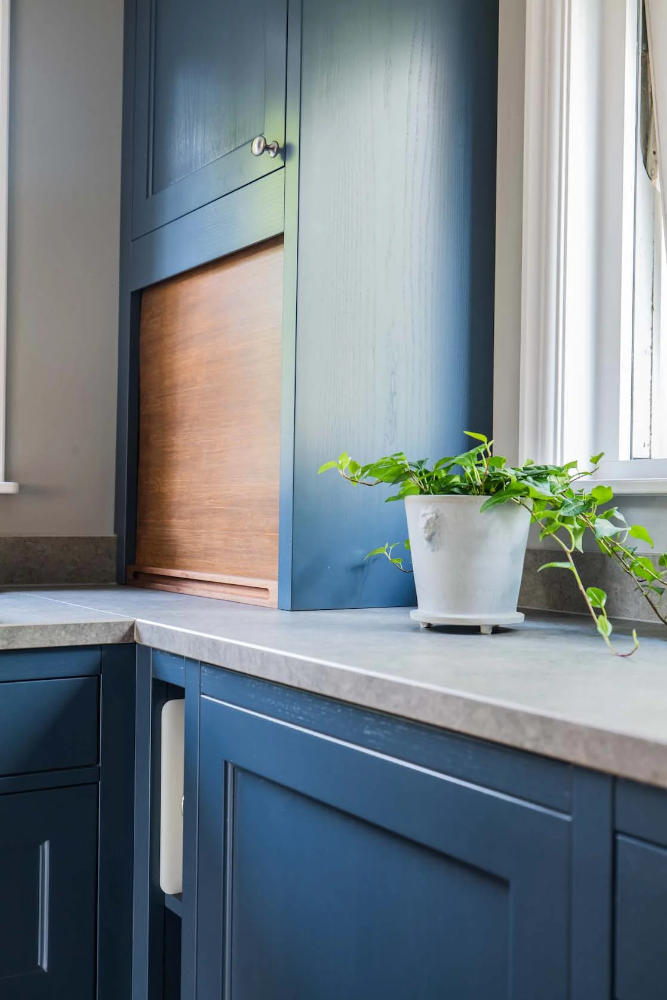
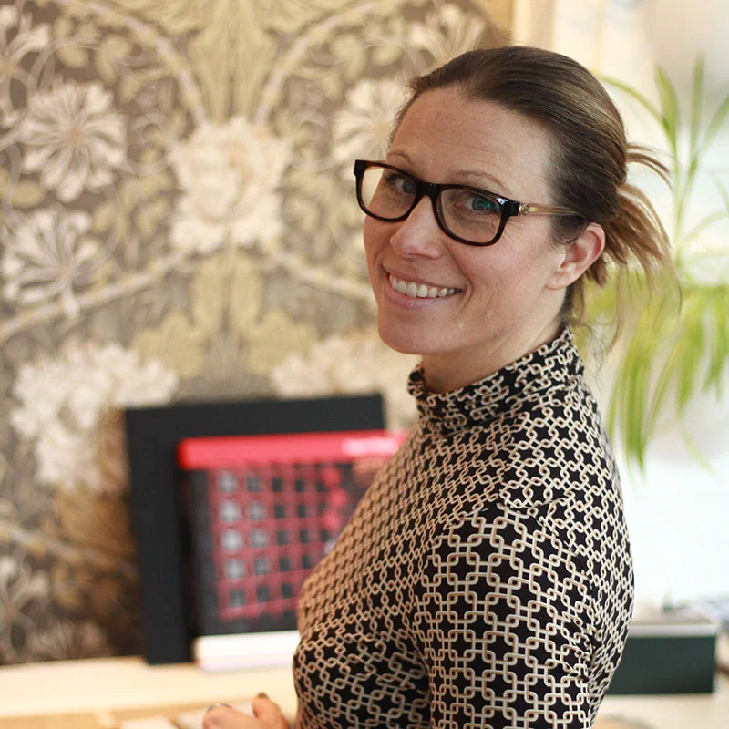

Se projektet
Ditt hem.
I sin bästa form.
Personlig inredningsarkitektur. Från första tanke till ett hem där allt hänger ihop.
Upptäck våra projektVackra rum börjar med
att förstå livet i dem.
Hur vill du leva och bo? Vi förenar planlösning, material och detaljer till en genomtänkt helhet. Med lyhördhet för både dig och ditt hem.
Det här kan vi hjälpa dig medHem med personlighet.
Alla våra projekt
Detaljer som gör skillnad. Kök i blå toner.
Från tanke.
Till ert hem.
Planlösning & ombyggnation
Vi utgår från bostadens förutsättningar och dina behov. Rum, flöden och funktioner formas till en helhet som fungerar i vardagen.
Kök, badrum & platsbyggt
Måttanpassade snickerier och genomarbetad förvaring ger varje yta en uppgift. Material och detaljer väljs med hela hemmet i åtanke.
Material, färg & inredning
Kulörer, ytskikt, möbler och belysning får samspela. Det praktiska och det personliga tar lika stor plats.
Från ritning till genomförande
Vi hjälper till med ritningsunderlag, bygglov, budget och samordning. Omfattningen anpassas efter ditt projekt.
Hej, jag är Jenny.
Jag står bakom Era Rum och har arbetat med inredningsarkitektur sedan 2010. Med ett personligt engagemang följer jag ditt projekt från idé till färdigt rum.
Lär känna Era Rum
Era fina ord.
”Jag är väldigt nöjd med service, kvalitet och bemötande.”
”Vi är supernöjda!”
”Våra absolut bästa rekommendationer ger vi!”
Vad drömmer
ditt hem om?
Berätta om dina idéer. Vi börjar med ett samtal.
Mejla Jenny